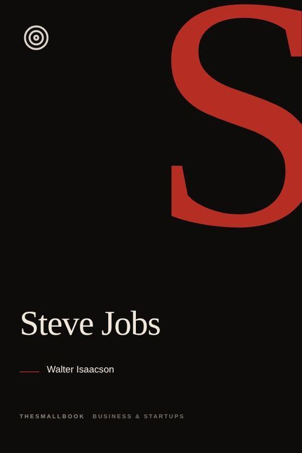
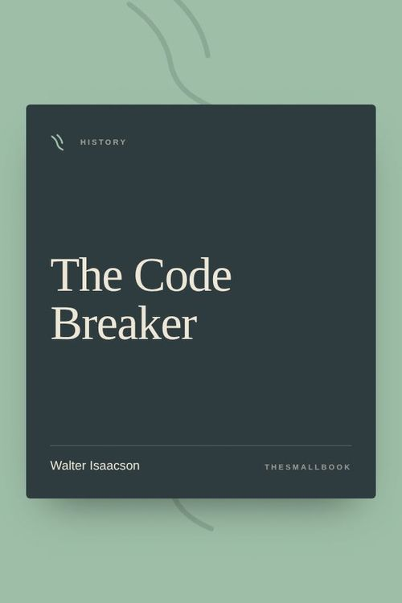

Library › Authors › Walter Isaacson
Books by Walter Isaacson
Walter Isaacson has 2 books in the library. Every book here is read down to the big idea, the lessons, the lines worth keeping and the actions worth taking. Start with the summary, then buy the full book if it earns a place on your shelf.

Steve Jobs
2011 · 8 min · 6 lessons
Jobs stood at the intersection of humanities and technology - and proved that taste, focus, and unreasonable standards can bend reality.
Isaacson interviewed Jobs over forty times - plus a hundred friends, enemies, and colleagues - with no topic off limits and no approval rights. The result is the definitive portrait of tech's most consequential founder: adopted kid and counterculture seeker; co-creator of the personal computer; exiled from his own company at 30; builder of Pixar and NeXT in the wilderness; and author of the greatest comeback in corporate history - iMac, iPod, iPhone, iPad - before dying at 56. The threads that matter for builders:...
Lessons in the summary
- The Intersection: Technology Alone Is Not Enough
- The Reality Distortion Field
- Focus Means Saying No
- End-to-End: Own the Whole Experience
- The Price of the Dent: Genius, Cruelty & the Ledger
- The Bicycle for the Mind: Leverage Multiplies Talent
Lines worth keeping
- The people who are crazy enough to think they can change the world are the ones who do.
- Deciding what not to do is as important as deciding what to do.
- Stay hungry. Stay foolish.

The Code Breaker
2021 · 11 min · 8 lessons
CRISPR came from studying how bacteria fight viruses. The story of its invention is about basic science, rivalry, collaboration, and a moral question nobody was ready for.
Walter Isaacson follows Jennifer Doudna and the field around her as a bacterial immune system becomes a tool that can rewrite DNA. The lesson is not that genius creates tools, it is that unplanned basic research does, that competition speeds it up and muddies who gets credit, and that a tool which can edit the human germline forces scientists to govern themselves.
Lessons in the summary
- Curiosity First
- Find and Replace in DNA
- Two Labs, One Tool
- The Race and the Credit
- A Tool Has No Intention
- The Moment of Temptation
- Rules Faster Than the Science
- The Caretaker's Job
Lines worth keeping
- The most powerful tools come from questions asked with no application in mind.
- Editing life is no longer a question of whether we can. It is a question of who decides.
- Competition accelerates the science and complicates the credit.
Questions Walter Isaacson helps answer
Read nearby authors next
- Devdutt Pattanaik 5 books
- Rashmi Bansal 5 books
- Robin Sharma 5 books
- Chetan Bhagat 4 books
- Seth Godin 4 books
- Alex Hormozi 3 books
- Gurcharan Das 3 books
- Nir Eyal 3 books